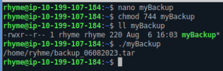

Bash Shell Scripting
Introduction:⌗
I started by checking out what shell is running in our terminal using echo $SHELL.
Then using the command ls I listed the available files and directories in our working directory, and after that I listed the long format of the directories and files including the hidden ones using -la. After checking the current data available using ls, I typed pwd to check my current working directory. Next using cd / I navigated to the root directory which is located at the top of all directories, which contains sensitive files.
Manipulating files:⌗
I used touch command to create a file name myBashScript then used ls -l myBashScript to list my new file and check that it was created successfully, I decided next that I would like to change the name of the file using the command mv myBashScript muchBetterName. Finally, I removed the file using rm muchBetterName.

Next, I tried cat command which stands for concatenate, to list the contents of a file and redirect the contents into another file. First, I made a file called myNewFile.txt and using the command echo “Hello World” > myNewFile.txt to output the phrase hello world into the file, then cat myNewFile.txt to output the content on the screen. Next, I used the command cat myNewFile.txt > test.txt and finally displayed it using cat.
Using more and less you can view all the content of the file or portion of them. I used nano to edit the contents of the files I created.
Finding Information:⌗
I tried creating a new directory using mkdir and moved it to a new directory called backups and created two new files into it, then we deleted the whole file using rm -r backups because rmdir only deletes empty directories.
I tried to find a directory using find command, which displayed a bunch of errors then tried it again but I added 2>dev/null which outputs all the errors into the file called null. By using * to be able to get all files and directories that has backup in their names.
Next I tried the grep command to find specific files that contains regular expressions.
I learned that using !ls I can access the content since last time I used ls. Using history I can check the history of all commands I used in my CLI and man is used to check the manual of a specific command.
Aliases:⌗
Alias is a shortcut we can use to access a command that is frequently used, for example, ll which is an alias for the command ls -alF, we can check what an alias is for by typing alias ll. We can create aliases by going to the file called .bash_aliases which is checked when the shell is first lunched and checks the .bashrc file. To create the aliase, we should run the following into the .bash_aliases file:
And replace the command that is after fbackup with the command you want to create an aliase for, and replace fbackup with the name that you desire for the alias command. Note: When you first create an alias the shell won’t recognize it, since it only looks into the file once when it is first lunched, to make it look into the file and recognize the new alias we can type source .bash_aliases.
Writing a Shell Script:⌗
I started writing my first bash script. First, I created a file using nano and then using #!/bin/bash also known as the Shebang which specifies that the shell type is bash. Next, I wrote a comment to specify what this script is for so that in the future I can understand what it is made for. Then I set up variables and stored directory path into them. After that, to make sure that the file names aren’t the same, I assigned a variable that stores the date and I used back tick to let the shell know that it should execute the command that is inside of the back ticks, file name, and the file extension type, then combined them into a variable called FILE_NAME. After the script was create, I changed the file user permission using chmod to be able to execute the script.


Then I added tar to my script, which stands for tape archive and is used to create Archive and extract the Archive files. Using the command bellow allowed me to create and extracted the archived file using the following flags: -c which creates an archive by bundling files and directories together. -f Specifies the filename of the archive to be created or extracted. -z Uses gzip compression when creating a tar file.
Reference used: https://www.geeksforgeeks.org/tar-command-linux-examples/
Bash Scripting and Creating a Cron Job With Crontab:⌗
Final step, I started by creating an if else statement to check if the script is working and sends it to the specified email using the mail command else it will output that at that date something went wrong into the error.log file. Then, I used crontab -e to automate the process.